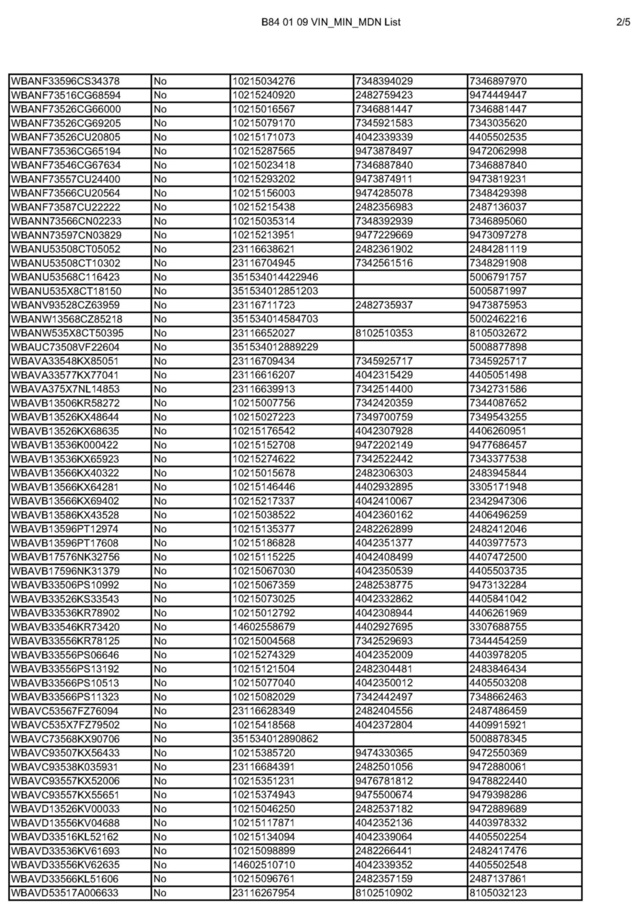

Campaign - Reactivation Of Telematics(R) Control Unit
SI B84 01 09Communication Systems
April 2009
Technical Service
PERFORM THE PROCEDURE OUTLINED IN THIS SERVICE INFORMATION ON ALL
AFFECTED VEHICLES THE NEXT TIME THEY ARE IN THE SHOP FOR MAINTENANCE
OR REPAIRS AND PRIOR TO RETAIL DELIVERY.
SUBJECT
Service Action: Reactivation of Telematics Control Unit (TCU)
MODEL
E46 (3 Series) equipped with ZPP (Premium Package) or SA 639 (BMW Assist)
E53 (X5) equipped with ZPP (Premium Package) or SA 639 (BMW Assist)
E60, E61 (5 Series) equipped with ZPP (Premium Package) or SA 639 (BMW Assist)
E63, E64 (6 Series) equipped with ZPP (Premium Package) or SA 639 (BMW Assist)
E65, E66 (7 Series)
E70 (X5) equipped with ZPP (Premium Package) or SA 639 (BMW Assist)
E82, E88 (1 Series) equipped with ZPP (Premium Package) or SA 639 (BMW Assist)
E83 (X3) E82, E88 equipped with ZPP (Premium Package) or SA 639 (BMW Assist)
E85, E86 (Z4) equipped with ZPP (Premium Package) or SA 639 (BMW Assist)
E90, E91, E92, E93 (3 Series) equipped with ZPP (Premium Package) or SA 639 (BMW Assist)
All vehicles produced up to March 2008
SITUATION
The Telematics Control Unit (TCU) in the vehicle may not have been properly activated. This may cause the manual and automatic emergency call and roadside call (BMW Assist) not to function. This Service Action reactivates the TCU by assigning a new Mobile Identification Number (MIN) and Mobile Device Number (MDN) to the TCU.
Copies of the customer notification letters are included.
On I/K-bus vehicles (E46, E53, E83, E85), for customer convenience, a step-by-step procedure is included in the customer letter so that the customer can reactivate the TCU without having to make a service appointment.
AFFECTED VEHICLES
This Service Action involves vehicles with BMW Assist, produced up to 3/08.
In order to determine whether a specific vehicle is affected by this Service Action, refer to the chassis numbers listed in the attachment B84 01 09_VIN_MIN_MDN.
Note:
The vehicles affected by this Service Action will not appear on DCS Vehicle History Inquiry Reports.
PROCEDURE FOR I/K-BUS VEHICLES
1. Check the BMW Assist account status on DCSnet. The BMW Assist services expiration date and TCU activation status can be checked
on DCSnet under Service/Vehicle History Inquiry. Refer to SI B02 01 06 (Updated DCSnet Vehicle History Inquiry information of BMW Assist) for more information.
^ If no information is displayed on DCSnet, check the account status by calling BMW Assist.
If the customer is NOT an active BMW Assist services client, no further action is required.
Vehicles within the Verizon Wireless Network
2. Simultaneously press the Roadside Assistance "Wrench" button and the mayday "SOS" button for more than 8 seconds. The TCU will automatically place two calls approximately 20 seconds apart.
^ First call - "*22890" will be displayed on the radio or status line on the Board Monitor (BM). The TCU will make a connection to the network provider. A verbal message will be heard that the phone is being programmed. At the end of the programming, a message should be heard that the phone was successfully programmed.
^ Second call - "*22891" will be displayed on the radio or status line on the Board Monitor (BM). The TCU will make a connection to the network provider. A verbal message will be heard that the roaming capabilities are being updated. At the end of the call, a message should be heard that the roaming capabilities were successfully updated.
3. If you do not hear the message at the completion of each call, the update was NOT successfully completed, and the process must be repeated.
^ Note: If the system does not attempt to make the call or if "BMW Assist Inactive" is displayed on the radio or BM, please refer to SI B84 24 06.
4. Switch the ignition off for 10 seconds. The new MIN and MDN will then be imported into the TCU.
5. Test the BMW Assist service for proper operation by placing a test call (press the Roadside Assistance "Wrench" button). Make sure that the BMW Assist Response Center has received the correct MIN/MDN, VIN and location for the vehicle. Have the representative update his or her records as needed.
Vehicles outside the Verizon Wireless Network
6. The vehicle must be located within the Verizon Wireless network for the above reactivation procedure to work properly. See the attachment to SI B84 15 03 for the list of BMW centers located outside this network. If the vehicle is not in the Verizon Wireless network, perform steps one and two and then follow these additional steps.
^ Create a PuMA case to receive TCU shipping authorization.
^ Remove the TCU from the vehicle.
^ Send the TCU, the BMW Assist TCU Reactivation Form with the new MIN/MDN numbers, and a copy of the PuMA case via FedEx to:
BMW of North America, LLC
Attn: Teileclearing TCU (TCU Reactivation B84 01 09)
200 Chestnut Ridge Road Building 150
Woodcliff Lake NJ 07677
BMW NA will reactivate the TCU and ship it out on the same business day that it was received.
After receiving the TCU back from BMW NA, reinstall the TCU, and place a BMW Assist call, as outlined in step 5.
PROCEDURE FOR MOST-BUS VEHICLES
Refer to attachment
LABEL INSTRUCTIONS
This Service Action has been assigned code number 534. After the vehicle has been checked, and corrected if necessary, obtain a label (SD 92-352) and:
a. Emboss your BMW dealer warranty number in
the middle of the label (1);
b. Punch out code number 534 printed on the label
(2); and
c. Affix the label to the B-pillar as shown.
If the vehicle already has a label from a previous Service Action/Recall Campaign, affix the new label next to the old one. Do not affix one label on top of another one, because a number from an underlying label could appear in the punched-out hole of the new label.
WARRANTY INFORMATION
Covered under the terms of the BMW New Vehicle Limited Warranty.
ATTACHMENTS
view PDF attachment B840109MOST_Procedure.

view PDF attachment B840109VIN_MIN_MDN_List.
view PDF attachment B840109Customer_Letter_MOST_bus.
view PDF attachment B840109Customer_Letter_X3_X5.

Disclaimer